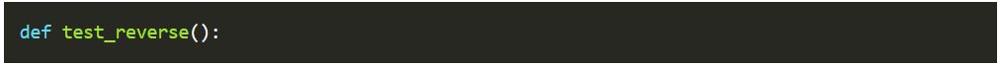
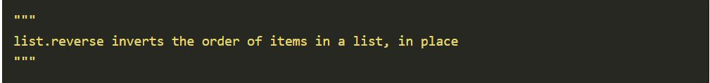
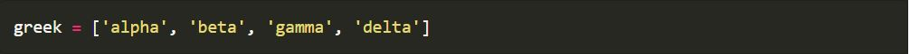
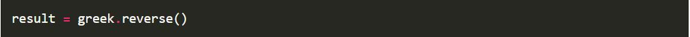
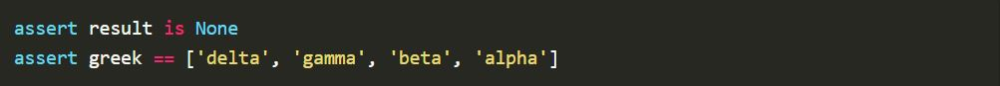

What is AAA TESTING?
The Arrange Act Assert also AAA and 3A pattern of testing was observed and named by Bill Wake in 2001. I first came across it in Kent Beck book Test Driven Development: By Example and I spoke about it at PyConUK 2016.
The pattern focuses each test on a single action. The advantage of this focus is that it clearly separates the arrangement of the System Under Test SUT and the assertions that are made on it after the action.
On multiple projects I have worked on I have experienced organised and clean code in the main codebase, but disorganisation and inconsistency in the test suite. However when AAA is applied, I have found it helps by unifying and clarifying the structure of tests which helps make the test suite much more understandable and manageable.
- DEFINITION:
The definition of the test function.
EXAMPLE:

GUIDELINES
Name your function something descriptive because the function name will be shown when the test fails in Pytest output.
Good test method names can make docstrings redundant in simple tests (thanks Adam!).
- DOC STRING:
An optional short single line statement about the behaviour under test.
EXAMPLE:

GUIDELINES
Docstrings are not part of the AAA pattern. Consider if your test needs one or if you are best to omit it for simplicity.
If you do include a docstring, then I recommend that you:
Follow the existing Docstring style of your project so that the tests are consistent with the code base you are testing.
Keep the language positive - state clearly what the expected behaviour is. Positive docstrings read similar to:
X does Y when Z
Or
Given Z, then X does Y
Be cautious when using any uncertain language in the docstring and follow the mantra Explicit is better than implicit (PEP20)
Words like should and if introduce uncertainty. For example:
X should do Y if Z
In this case the reader could be left with questions. Is X doing it right at the moment? Is this a TODO note? Is this a test for an expected failure?
In a similar vein, avoid future case.
X will do Y when Z
Again, this reads like a TODO.
- ARRANGE:
The block of code that sets up the conditions for the test action.
EXAMPLE:

GUIDELINES
Use a single block of code with no empty lines.
Do not use assert in the Arrange block. If you need to make an assertion about your arrangement, then this is a smell that your arrangement is too complicated and should be extracted to a fixture or setup function and tested in its own right.
Only prepare non-deterministic results not available after action.
The arrange section should not require comments. If you have a large arrangement in your tests which is complex enough to require detailed comments then consider:
Extracting the comments into a multi-line docstring.
Extracting the arrangement code into a fixture and testing that the fixture is establishing the expected conditions as previously mentioned.
- ACT:
The line of code where the Action is taken on the SUT.
EXAMPLE:

GUIDELINES
Start every Action line with result =.
This makes it easier to distinguish test actions and means you can avoid the hardest job in programming: naming. When every result is called result, then you do not need to waste brain power wondering if it should be item = or response = etc. An added benefit is that you can find test actions easily with a tool like grep.
Even when there is no result from the action, capture it with result = and then assert result is None. In this way, the SUT behaviour is pinned.
If you struggle to write a single line action, then consider extracting some of that code into your arrangement.
The action can be wrapped in with raises for expected exceptions. In this case your action will be two lines surrounded by empty lines.
- ASSERT:
The block of code that performs the assertions on the state of the SUT after the action.
EXAMPLE:

GUIDELINES
Use a single block of code with no empty lines.
First test result, then side effects.
Limit the actions that you make in this block. Ideally, no actions should happen, but that is not always possible.
Use simple blocks of assertions. If you find that you are repeatedly writing the same code to extract information from the SUT and perform assertions on it, then consider extracting an assertion helper.
The final test